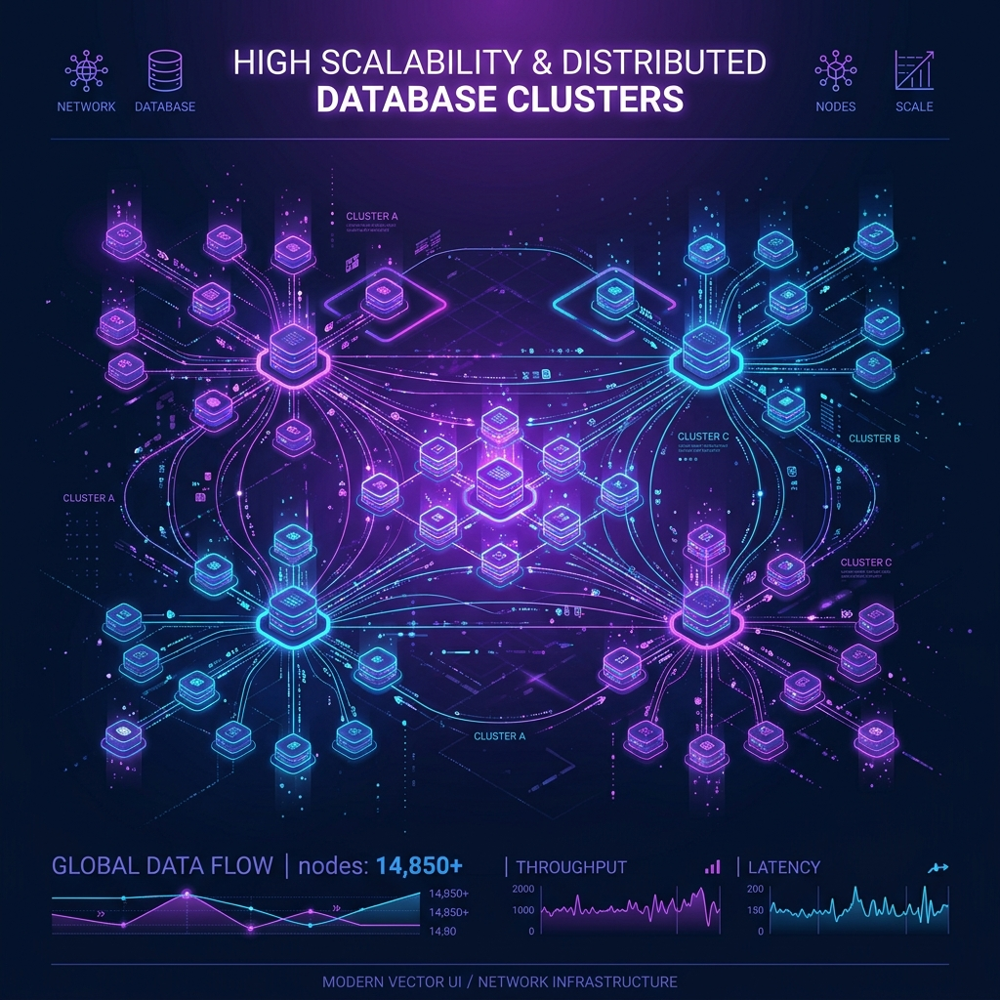

I am a veteran software architect and technology leader. Over the past two decades, I've designed and scaled resilient infrastructures, led distributed global engineering teams, and guided executive technology strategies.
Throughout my career, I've worked across multiple tech horizons—evolving from writing low-level systems code in C/C++ to designing large-scale cloud services, event-driven architectures, and implementing Zero-Trust enterprise frameworks. My strength lies in bridging the gap between high-level business goals and complex engineering execution.
I work with growth companies and enterprise brands to build high-performing systems that scale to millions of users, audit infrastructure security, and mentor developers into engineering leaders.
A timeline of key roles and transitions over a two-decade career path in software engineering and technology leadership.
Providing strategic architectural consulting and fractional CTO advisory for enterprise scale-ups. Leading zero-trust infrastructure initiatives and auditing cloud deployments for high compliance standards.
Managed distributed engineering groups totaling 40+ developers. Oversaw the migration of core systems to multi-cloud setups, resulting in a 35% infrastructure cost reduction and a boost to 99.99% system availability.
Led a team of core infrastructure engineers building custom middleware to manage high-throughput data streams. Handled scaling issues for datastores serving over 10 million daily active users.
Designed and built reliable, low-latency microservices using Java and C++. Integrated early AWS cloud services and developed background processing services.
My primary areas of expertise, backed by real-world deployments and decades of technical leadership.
A selection of high-impact engineering projects designed, implemented, or overseen during my career.
Oversaw the migration of a legacy monolithic stack to an AWS-hosted Kubernetes platform. Achieved sub-second response times globally and a 40% reduction in cloud hosting bills.
Request case study →
Developed custom event-driven message brokers designed to process over 1.2 billion events daily with sub-millisecond tail latencies. Resolves complex data sequencing challenges.
Request case study →Designed the backend MLOps data pipeline for a predictive analytics engine, feeding high-throughput database metrics into machine learning models for proactive threat detection.
Request case study →Whether you are looking to scale your core backend architecture, need security and operations compliance auditing, or seek senior technical advisory, I would love to hear from you.